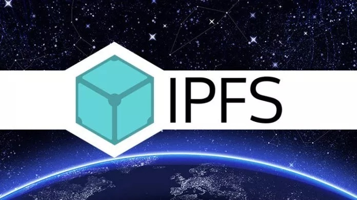
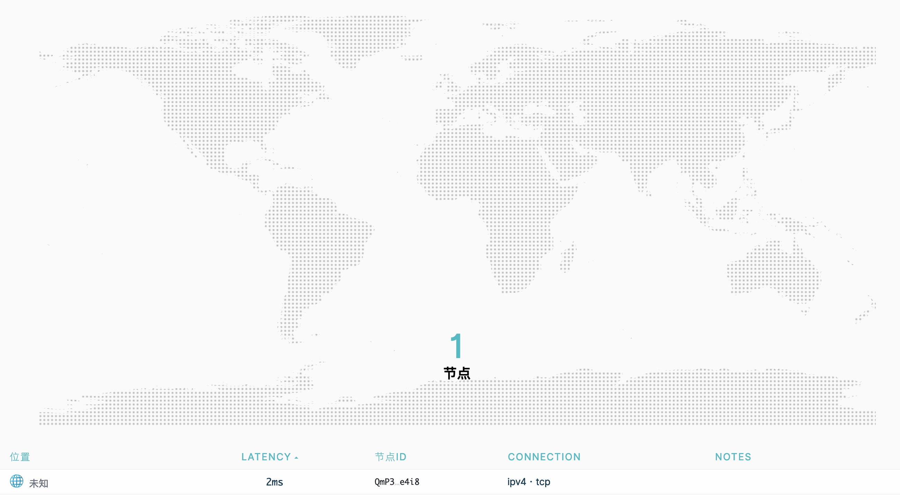

Table of Contents
go-ipfs 是一个分布式基于区块链技术的分布式文件系统，文档可以查看 官方文档 。本文主要记录和介绍如何使用 go-ipfs 搭建与公有网络隔离的私有网络。
要点其实也不复杂：
- 使用 swarm.key 确保私有网络不对外开放
- 删除不必要的 bootstrap 节点，并保留自己的私有 bootstrap 节点
- 使得 ipfs-webui 的相关文件在 ipfs 私有网络上是可以访问到的
- 使用
LIBP2P_FORCE_PNET=1的环境变量设置 ipfs 运行在私有网络模式中
下面将介绍如何从源码编译并启动 bootstrap 节点。go-ipfs 还在积极开发中，在 2019 年 7 月 26 日是可以正常完成的。如果发现有问题，可以在评论中反馈。
准备 ipfs 环境
# 创建 ipfs 的运行时目录
mkdir -p ./ipfs
# 获取 go-ipfs-swarm-key-gen
git clone https://github.com/Kubuxu/go-ipfs-swarm-key-gen
# 创建 swarm.key
# 所有的私有网络节点都需要这个 swarm.key 才能正常加入私有网络
cd go-ipfs-swarm-key-gen
IPFS_PATH=./ipfs go run ipfs-swarm-key-gen/main.go > $IPFS_PATH/swarm.key
cd ../
# 获取最新的 go-ipfs 源码
git clone https://github.com/ipfs/go-ipfs.git
# 编译 go-ipfs
cd go-ipfs
make build
cd ../
# 初始化 ipfs 的运行时目录
# 初始化时会创建 ipfs 的 peer identity，这个 peer identity 会在后续配置过程中使用到。peer identity 类似于下面这种形式：
# peer identity: QmQ2YEpJhikmMZJXG39fzxgQNCAFDzyv9m15xe9GsvkRPL
# IPFS_PATH=./ipfs 指定 ./ipfs 为运行时目录
# LIBP2P_FORCE_PNET=1 要求 ipfs 运行在私有网络模式
IPFS_PATH=./ipfs LIBP2P_FORCE_PNET=1 ./go-ipfs/cmd/ipfs/ipfs init
# 删除公开网络的所有 bootstrap 节点
IPFS_PATH=./ipfs LIBP2P_FORCE_PNET=1 ./go-ipfs/cmd/ipfs/ipfs bootstrap rm --all
# 把本机作为 bootstrap 节点
# 其中 QmQ2YEpJhikmMZJXG39fzxgQNCAFDzyv9m15xe9GsvkRPL 要修改为实际的 peer identity
IPFS_PATH=./ipfs LIBP2P_FORCE_PNET=1 ./go-ipfs/cmd/ipfs/ipfs bootstrap add /ip4/127.0.0.1/tcp/4001/ipfs/QmQ2YEpJhikmMZJXG39fzxgQNCAFDzyv9m15xe9GsvkRPL
# 启动 ipfs
IPFS_PATH=./ipfs LIBP2P_FORCE_PNET=1 ./go-ipfs/cmd/ipfs/ipfs daemon
编译并启用 ipfs-webui
如果你希望像公网那样使用 ipfs 官方自带的管理界面 ipfs-weibui 需要通过以下步骤使用最新的 ipfs-webui 。
# 获取最新的 ipfs-webui 代码
git clone https://github.com/ipfs-shipyard/ipfs-webui.git
# 编译 ipfs-webui
# 需要 python2 支持，需要使用 npm 而不要使用 cnpm
# 编译后的文件在 build 目录
cd ipfs-webui
npm install
npm run build
# 把编译得到的 ipfs-webui 添加到 ipfs 文件系统私有网络中
# 下面的命令执行后会返回类似的响应，返回的 public 目录对应的 hash 在需要添加到 go-ipfs 代码中
# added QmRSgDcuaXEKJMTpJPL4bVDRRzWXmvF4Gt6cVBXsucpDMh build
IPFS_PATH=../ipfs LIBP2P_FORCE_PNET=1 ../go-ipfs/cmd/ipfs/ipfs add -r ./build
# 在 bootstrap 上强制存储 ipfs-webui
IPFS_PATH=../ipfs LIBP2P_FORCE_PNET=1 ../go-ipfs/cmd/ipfs/ipfs pin add QmRSgDcuaXEKJMTpJPL4bVDRRzWXmvF4Gt6cVBXsucpDMh
修改并重新编译 go-ipfs
修改文件把刚才编译的 ipfs-webui 加到 ipfs 中，需要修改 go-ipfs/core/corehttp/webui.go 把 webui 对应的 hash 值替换成刚才添加到 ipfs 时的返回的 hash ，例如：
package corehttp
// TODO: move to IPNS
// 把 const WebUIPath 替换成私有网络中 webUI 的 PATH
const WebUIPath = "/ipfs/QmRSgDcuaXEKJMTpJPL4bVDRRzWXmvF4Gt6cVBXsucpDMh"
// this is a list of all past webUI paths.
// 原来公开网络的 webUI 路径保存在这个列表中
var WebUIPaths = []string{
WebUIPath,
"/ipfs/QmQNHd1suZTktPRhP7DD4nKWG46ZRSxkwHocycHVrK3dYW",
"/ipfs/QmfQkD8pBSBCBxWEwFSu4XaDVSWK6bjnNuaWZjMyQbyDub",
"/ipfs/QmXc9raDM1M5G5fpBnVyQ71vR4gbnskwnB9iMEzBuLgvoZ",
"/ipfs/QmenEBWcAk3tN94fSKpKFtUMwty1qNwSYw3DMDFV6cPBXA",
"/ipfs/QmUnXcWZC5Ve21gUseouJsH5mLAyz5JPp8aHsg8qVUUK8e",
"/ipfs/QmSDgpiHco5yXdyVTfhKxr3aiJ82ynz8V14QcGKicM3rVh",
"/ipfs/QmRuvWJz1Fc8B9cTsAYANHTXqGmKR9DVfY5nvMD1uA2WQ8",
"/ipfs/QmQLXHs7K98JNQdWrBB2cQLJahPhmupbDjRuH1b9ibmwVa",
"/ipfs/QmXX7YRpU7nNBKfw75VG7Y1c3GwpSAGHRev67XVPgZFv9R",
"/ipfs/QmXdu7HWdV6CUaUabd9q2ZeA4iHZLVyDRj3Gi4dsJsWjbr",
"/ipfs/QmaaqrHyAQm7gALkRW8DcfGX3u8q9rWKnxEMmf7m9z515w",
"/ipfs/QmSHDxWsMPuJQKWmVA1rB5a3NX2Eme5fPqNb63qwaqiqSp",
"/ipfs/QmctngrQAt9fjpQUZr7Bx3BsXUcif52eZGTizWhvcShsjz",
"/ipfs/QmS2HL9v5YeKgQkkWMvs1EMnFtUowTEdFfSSeMT4pos1e6",
"/ipfs/QmR9MzChjp1MdFWik7NjEjqKQMzVmBkdK3dz14A6B5Cupm",
"/ipfs/QmRyWyKWmphamkMRnJVjUTzSFSAAZowYP4rnbgnfMXC9Mr",
"/ipfs/QmU3o9bvfenhTKhxUakbYrLDnZU7HezAVxPM6Ehjw9Xjqy",
"/ipfs/QmPhnvn747LqwPYMJmQVorMaGbMSgA7mRRoyyZYz3DoZRQ",
}
var WebUIOption = RedirectOption("webui", WebUIPath)
重新编译 go-ipfs，启动后缺省可以通过 http://127.0.0.1:5001/webui 访问到 ipfs 的管理界面。
# 编译 go-ipfs
cd go-ipfs
make build
cd ../
# 启动 ipfs
IPFS_PATH=./ipfs LIBP2P_FORCE_PNET=1 ./go-ipfs/cmd/ipfs/ipfs deamon
启动其他节点
把 准备 ipfs 环境 中创建的 swarm.key 复制到合理位置，并且按照 准备 ipfs 环境 编译 go-ipfs、修改 bootstrap 节点、启动 ipfs 即可。如果一切正常，就可以在 bootstrap 节点上可以看到连接上来的 peer 节点。
